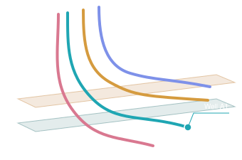
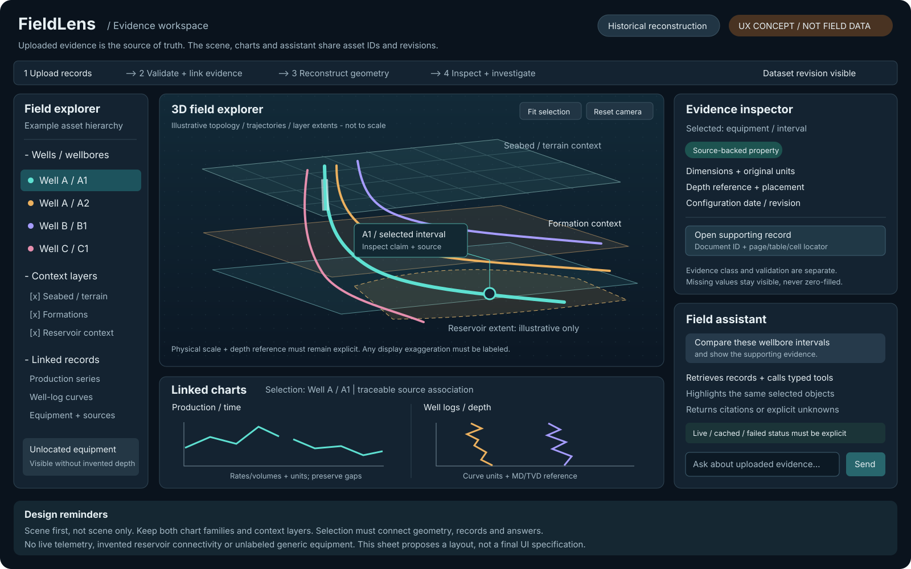
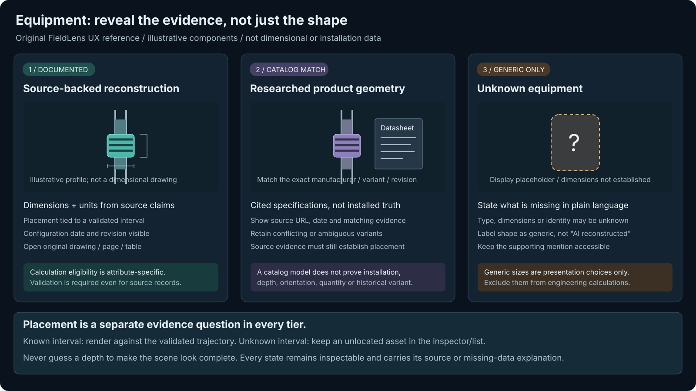

01 / Original conversation wireframe

02 / Full evidence workspace

03 / Equipment evidence states

Concepts only. Not measured Volve geometry, technical drawings, data fixtures, or a working application.


